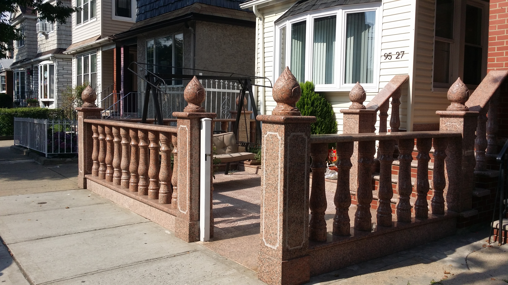
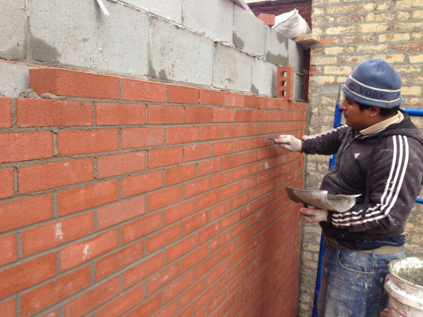
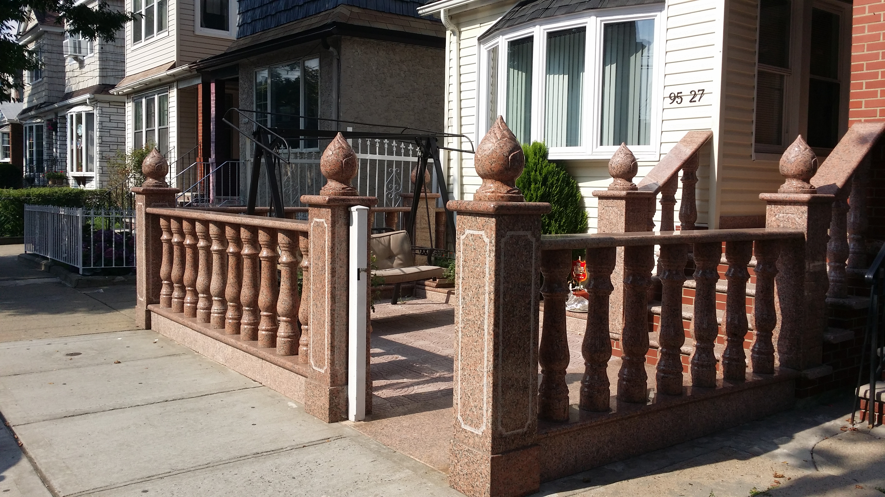
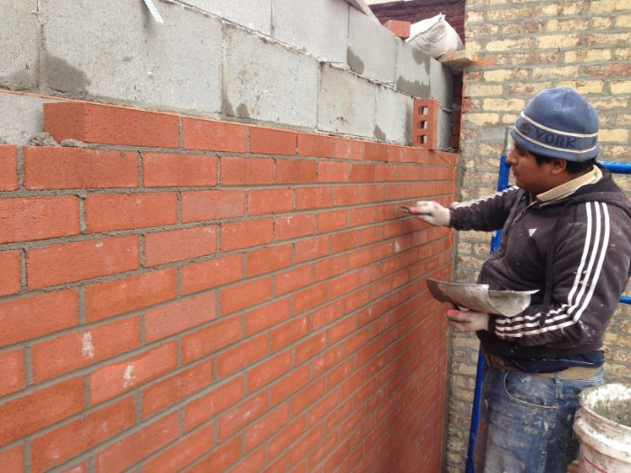

What Is Masonry Work?
Masonry work involves constructing or repairing structures using materials like brick, stone, or concrete. Skilled masonry adds strength, durability, and timeless beauty to your property.
Why Is Masonry Work Important?
- Provides long-lasting structural strength
- Improves fire resistance and weather protection
- Adds elegance and character to your property
- Increases energy efficiency with proper insulation
- Boosts property value with quality craftsmanship
Steps in a Masonry Project
- Assessment & Design: Evaluate structure and plan layout.
- Material Selection: Choose appropriate stone, brick, or block.
- Foundation Preparation: Ensure solid base for durability.
- Construction: Lay materials with precision and mortar.
- Finishing: Apply sealing or detailing for aesthetics and protection.
Signs You May Need Masonry Repair
- Cracked, chipped, or crumbling bricks or stones
- Mortar joints deteriorating or missing
- Water damage, leaks, or efflorescence (white stains)
- Bulging, leaning, or shifting walls
- Outdated or damaged structures needing restoration
Note: Quality masonry enhances durability, beauty, and safety—ensuring your structures last for decades.

 


